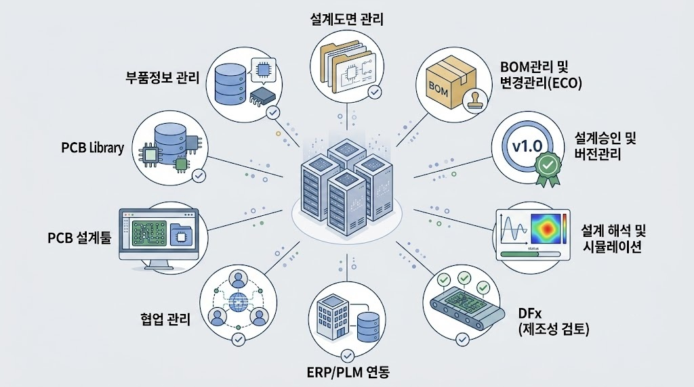
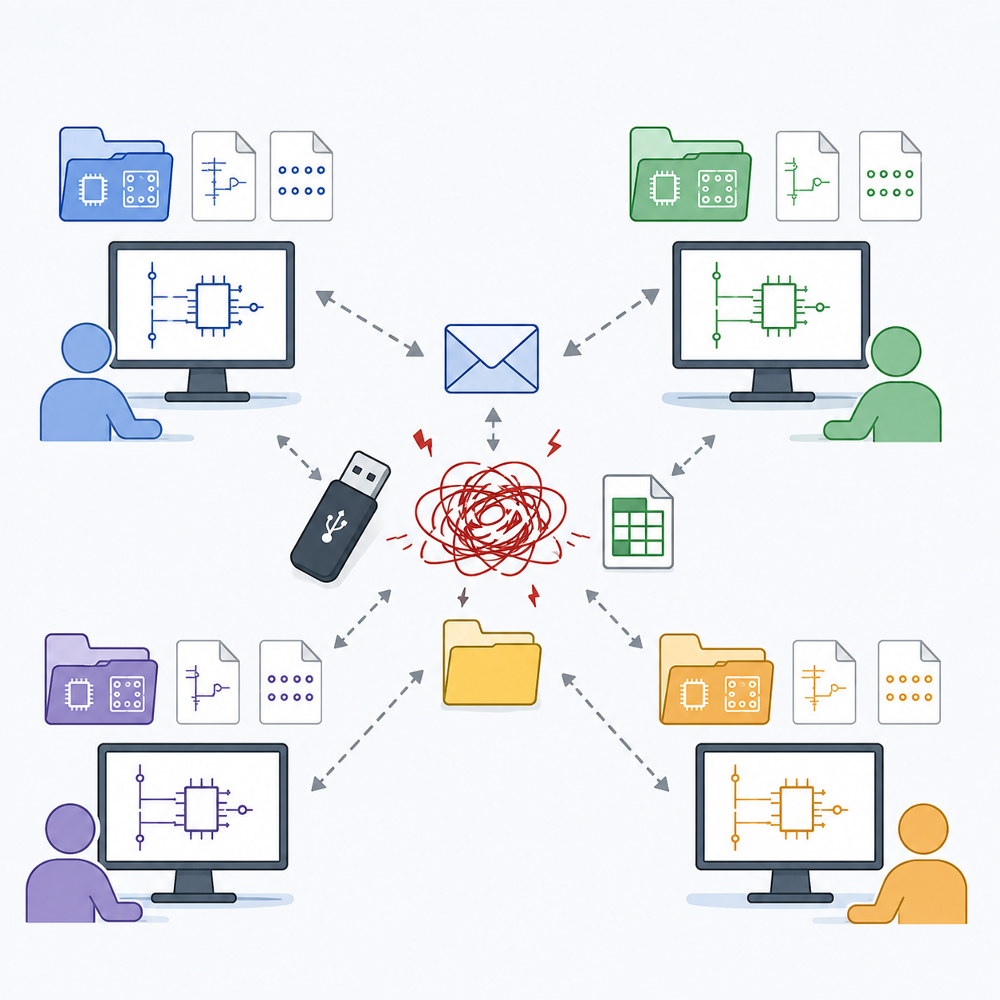
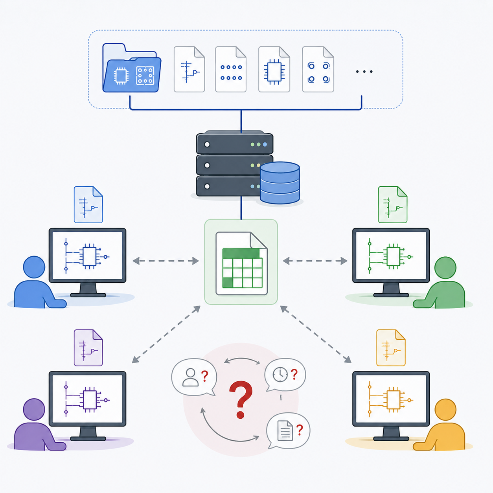
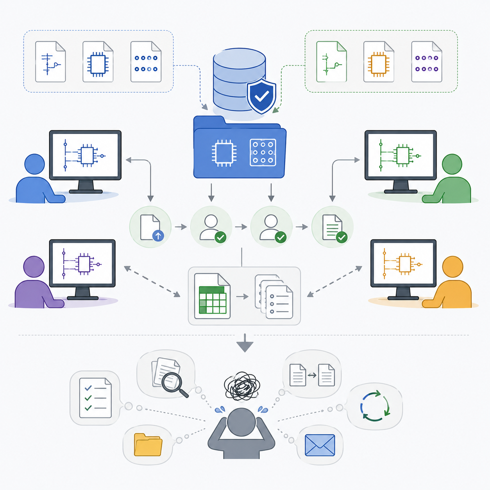
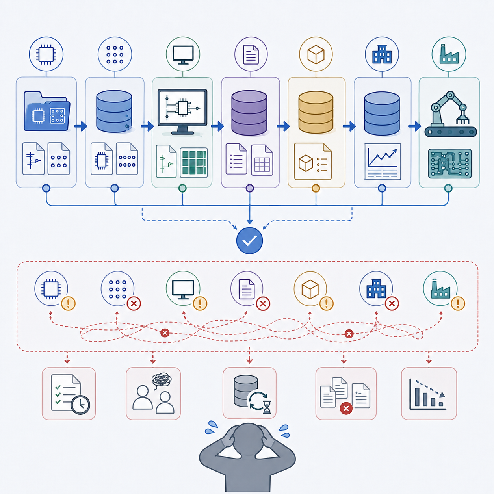
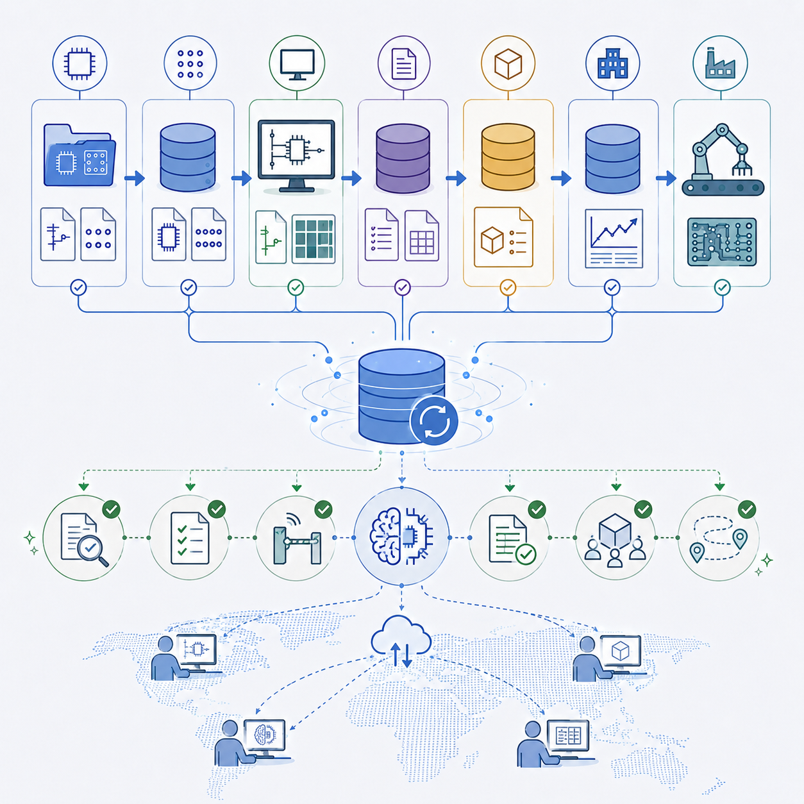
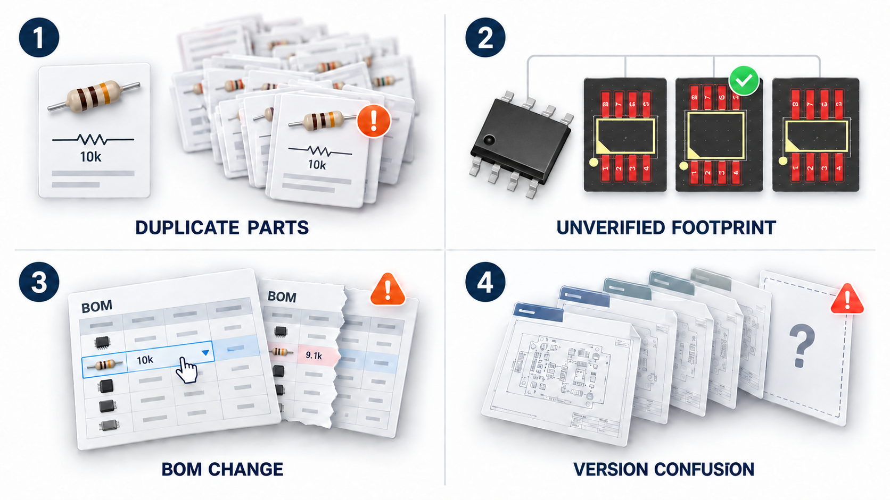

선진 기업과 비교해 보는 우리회사의 전자회로 개발 프로세스 진단
앞선 글에서는 PCB 개발 과정에서 회로도, PCB Layout, PCB Library가 어떤 역할을 하는지 살펴보았습니다.
그런데, 실력이 우수한 설계인력이 좋은 CAD TOOL을 사용하는 것만으로는 좋은 PCB가 만들어질 수 없습니다. 설계자의 실력도 중요하지만 더 중요한 것은 설계를 뒷받침하는 인프라와 프로세스입니다.
오늘은 우리 회사의 전자회로 개발 환경이 어느 수준인지 함께 점검해 보겠습니다.
1. CAD TOOL만 있으면 되는 시대는 오래전에 끝났다
많은 회사들이 PCB CAD TOOL을 구매하면 설계 환경이 갖춰졌다고 생각합니다. 하지만 실제 선진 기업에서는 CAD는 단지 하나의 도구일 뿐입니다.
쉽게 비유하자면 CAD는 자동차이고 설계자는 드라이버, 설계 프로세스는 도로, 신호등, 교통법규, 주유 인프라입니다.
좋은 자동차와 좋은 드라이버가 있더라도 도로가 없으면 빠르게 달릴 수 없습니다.
즉, 설계자가 사용하는 CAD는 전자회로 개발 프로세스의 중심이지만 전체 시스템에서는 일부에 불과합니다.
실제 기업에서 필요로 하는 주요 인프라 요소는 다음과 같습니다.
- 부품정보 관리
- PCB Library 관리
- BOM관리 및 변경관리(ECO)
- 설계도면 관리
- 설계승인 및 버전관리
- PI/SI 해석
- ERP/PLM 연동
- DFx (제조성 검토)
- 협업 관리

2. 성숙도(Level)로 보는 전자회로 개발 환경
[Level 1 - 인프라 없음]
특징 - 개인 작업 중심
각자의 Library 보유, 각자 설계도면 저장, USB로 파일 공유, 구두/메일로 업무연락, 엑셀로 일부 정보 관리
문제점 - 실패 반복
동일 부품이 설계자마다 다르게 표현되고, 통일되지 않은 Symbol과 Footprint를 사용. 품질 불규칙, 업무연락 이력 유실.
Library 오류, Revision 오류, 변경사항 전달 오류 등 관리가 전혀 안되고 반복적으로 문제가 발생합니다.

[Level 2 - 걸음마]
특징 - 기초적인 공유, 재활용
공유 폴더에 Library를 보관해서 공유하고, 공용 서버에 설계도면 저장, 파일이름 암묵적 합의, 엑셀 등으로 설계도면 위치와 BOM 관리
문제점 - 여전히 혼란
조금은 나아졌지만 여전히 누가 수정했는지, 무엇이 바뀌었는지 알기 어렵고, Library/설계도면/BOM의 최신 버전을 찾기 어려워 혼란스러운 상태입니다.

[Level 3 - 기초 수준의 인프라]
특징 - 표준 프로세스 사용
표준 프로세스를 구축해서 표준 부품 및 중앙 Library 관리, 승인 프로세스 사용, BOM 관리 체계 수립, ECO/Revision 관리 프로세스 사용
문제점 - 시스템 미흡
아직 프로세스를 처리할 시스템이 미비해서 일일이 챙겨야 하는 업무가 과다합니다. 경험에 의존하여 실수나 누락이 반복됩니다.
하지만 대부분의 중견기업이 여기에도 미치지 못하는 경우가 많습니다.

[Level 4 - 디지털화]
특징 - PLM 등 기간시스템 연동
표준부품정보 → Library → CAD → BOM → PLM → ERP → 생산 각 단계의 시스템이 존재합니다.
문제점 - 시스템 미성숙
데이터의 큰 흐름은 연결되어 있으나 개별 시스템의 완성도, 데이터 연계의 완성도가 일부 부족합니다.
시스템이 불편하고 통제가 완전하지 못해 일부작업이 지침을 벗어나거나 데이터 처리에 시간이 지체됩니다.

[Level 5 - Digital Thread]
프로세스가 정립되고 시스템간 데이터가 긴밀하게 통합·연계되어 있으며, AI 등을 사용하여 일부 자동화 처리(자동 검증, 자동 Gating, 3D 협업, 데이터의 중앙 관리 및 추적)를 수행합니다.
설계자의 기억과 경험에 의존하지 않고, 시스템이 자연스럽게 프로세스를 연결해 줍니다.
선진 글로벌 기업들이 도달하고자 하는 수준이지만, 실제로는 아직 Level 3-4 단계에 머물고 있는 경우가 많습니다.

선진 기업은 무엇이 다를까?
선진 기업은 단지 설계능력이 뛰어난 것을 넘어 실수를 하지 않도록 시스템과 프로세스가 운영되는 회사입니다.
예를 들어 설계자가 승인되지 않은 부품을 선택하려 하면 CAD가 선택 자체를 막습니다. Library도 관리자 승인 없이는 수정할 수 없어야 합니다. ECO, 도면의 Revision도 투명하게 관리되어야 합니다.
경험 많은 사람이 기억하는 것이 아니라 시스템이 처리합니다.
3. 흔히 발생하는 문제들
프로세스와 시스템이 잘 갖춰져 있지 않다면 다음과 같은 문제를 겪게 됩니다.
① 동일 부품이 여러 개 존재
동일 패키지, 동일 용량의 10kΩ 저항이 20종류로 등록. 신규 프로젝트를 진행하려 하는데 20개 중에 임의로 고르거나 새로운 저항을 등록
② 검증되지 않은 Footprint 사용
동일 부품에 대해 설계자마다 다른 Footprint를 사용하고 있어 PCB 제조 품질이 불규칙. 신규 설계 진행 시에 문제가 있었던 과거의 Library를 복사해서 사용
③ 제조 직전에 BOM 임의 변경
최종 버전의 BOM이 무엇인지 확인하기 어려움. 신규 설계시에 변경이 반영되지 않은 과거의 도면을 재활용하여 실패 반복
④ 도면 버전 혼란
FINAL, FINAL2, FINAL_LAST, FINAL_REAL, …
익숙한 파일명이지만 어느 것이 진짜인지 확인 불가

그 외에도 셀 수 없는 유형의 수많은 문제가 발생할 수 있습니다. 이러한 문제는 설계자의 능력이 부족해서가 아니라 관리 체계가 부족해서 발생합니다.
선진 기업은 어떤 관리를 할까요? 대표적인 것들을 꼽아 봅니다.
- 중앙 Library 관리 및 신규/수정에 대한 승인 절차
- Symbol, Footprint의 표준화, 검증 및 이력 관리
- 권한관리 – 사용자 역할 별 읽기/쓰기 통제
- 승인된 표준 부품만으로 구성된 BOM
- 체계적인 ECO 관리
- WIP(Work-In-Process) 설계도면의 중앙저장 및 변화관리
- Revision 통제
- 풍부한 자동화 기능
(예: 제조데이터 자동 생성, 설계 오류 자동 검사 등)
4. 우리 회사의 수준을 확인해 보려면 다음 항목을 체크해 보세요.
PCB 설계 인프라 Assessment Checklist
부품/Library
- □ 부품정보를 시스템에 통합 관리한다
- □ 중앙 Library를 사용하며, Library 관리자가 있다
- □ Library 신규/변경 승인 절차가 있다.
- □ 중복된 부품이나 Library가 없다.
설계 관리
- □ 설계 데이터에 대한 승인 절차, Revision 규칙이 있다.
- □ 자동으로 프로젝트 파일을 백업한다.
- □ 설계 데이터가 중앙 서버에 즉시 저장된다.
- □ 설계 데이터의 변경 이력과 업무연락 이력을 관리한다.
BOM
- □ 승인된 부품만 사용한다.
- □ BOM을 관리하는 시스템과 프로세스가 있다.
- □ ECO(설계변경)시 프로세스를 통해 BOM 변경 이력이 관리된다.
- □ 설계에 필요한 데이터가 ERP와 연결되어 있다.
협업
- □ 회로와 PCB 담당자가 동시에 작업 가능하다.
- □ PCB 담당자와 기구 담당자가 시스템을 통해 협업한다.
- □ 제조팀 등 관련부서에 데이터를 전달할 때 개별 연락 없이 시스템을 통한다.
- □ 변경사항이 자동 전달되고 이력이 관리된다.
품질
- □ 회로도 ERC를 수행하고 이력을 남긴다.
- □ PCB DRC를 수행하고 이력을 남긴다.
- □ Release 절차가 있다.
- □ 승인 없이는 생산하지 않는다.
체크 결과
| 체크 개수 | 진단 |
|---|---|
| 0~6개 | 기초 단계로, 개인 역량에 의존하는 환경입니다. |
| 7~10개 | 성장 단계로, 표준화가 진행되고 있으나 개선 여지가 큽니다. |
| 10~13개 | 시스템화 단계로, 중견기업이 추구하는 수준입니다. |
| 13~16개 | 안정화 단계로, 인프라를 갖춘 글로벌 기업의 관리 수준입니다. |
| 17개 이상 | 선진 단계로, 프로세스 중심의 시스템화된 개발 환경을 갖추고 있습니다. |
마무리
좋은 PCB는 좋은 설계자 한 명이 만드는 것이 아닙니다. 좋은 시스템과 프로세스가 있어야 좋은 제품을 만들어 낼 수 있습니다.
PCB 설계의 경쟁력은 CAD 성능보다 데이터 관리와 협업 체계에서 점점 더 큰 차이를 만들어 내고 있습니다.
우리 회사의 현재 수준을 객관적으로 진단하고, 한 단계씩 개선해 나간다면 설계 품질뿐 아니라 개발 속도와 제조 안정성까지 함께 향상될 수 있습니다.
다음편은 “BOM(Bill of Materials) 관리”를 주제로, 회로도와 PCB를 설계한 후 제품을 생산하기 위한 가장 중요한 BOM의 개념과 중요성, 그리고 BOM 관리가 구매·생산·품질과 어떻게 연결되는지를 실제 사례와 함께 알아보겠습니다.